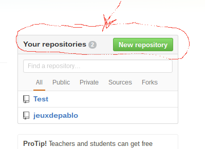
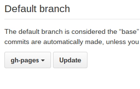

First at all go to github GitHub , this website allows you to create your own website !!
C'est un bon site ;o)
After that you can create your own account by going in Create your account !
Bien joue, good Job !
Go to "New repository" like on the photo

Put wathever name you want BUT don't forget to tick the "Initialize this repository with a README"
Go on the branch like on the picture

and create a new branch called : "gh-pages" be careful exactly like i wrote !!
After that go to settings on the top of your page like on the picture again :
Go to branches like on the image

Change the Default branch and change it for the branch your created just before (gh-pages)

And confirm, there he go !